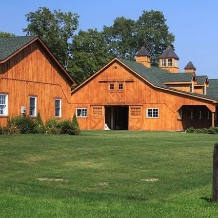
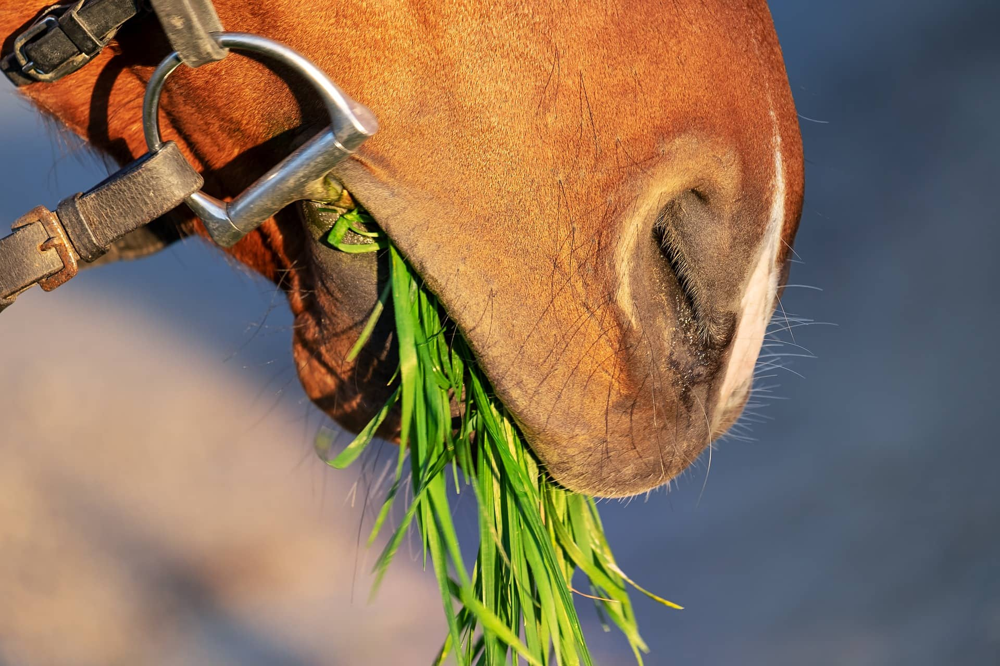

Habitat, alimentation et soins des chevaux
Notre Ferme
 Notre ferme est une bâtisse destinée au logement des équidés,
principalement des chevaux.
Elle se présente sous la forme d'un bâtiment unique ou de plusieurs
disposés autour d'une cour centrale.
Les différents éléments qui la composent doivent satisfaire aux
conditions d'utilité et d'hygiène nécessaires au maintien en
intérieur d'équidés.
Plusieurs types d'hébergement sont possibles : le box, la stalle et
la stabulation libre. Dans notre écurie, les chevaux sont totalement
dépendants des êtres humains.
Ces derniers doivent pourvoir à tous leurs besoins naturels et s'assurer de leur bien-être afin qu'ils ne
développent pas des troubles du comportement.
Alimentation du cheval
Le cheval est un herbivore.
A l'état sauvage, l'alimentation du cheval se constitue
exclussivement d'herbe (70% de graminées, 20% de légumineuses et 10%
de plantes diverses). Si le cheval est en écurie, l'alimentation
peut comporter des céréales (avoine, orge, maïs, etc.), des
fourrages (foin ou luzerne) et de la paille.
Le cheval passe de 14h à 16h par jour à manger. Cette durée
importante est due à la taille de l'estomac et du fait que les
aliments consommés soient faibles en valeurs énergétiques.
Les besoins nutritionnels sont liés :
au sexe du cheval
à la race
à la taille
à la température extérieure
au travail (activité physique)
à l'état physiologique (jument gestante ou allaitante).
Ferrure du cheval

Le rôle de la ferrure du cheval : A l'état sauvage les sabots du
cheval sont nus.
La ferrure du cheval a pour rôle de protéger la corne de l'usure, à
corriger les défauts d'aplombs ou lors de problème d'origine
orthopédique.
La ferrure du cheval est réalisé par le Maréchal-ferrant. La
fréquence de la ferrure : La durée de vie des fers est de 6 à 8
semaines sans éxéder 2 mois.
La ferrure comprends le changement des fers mais aussi le parrage
(coupe de la corne).
Même un cheval non ferré doit recevoir un parrage. Comment vérifier
l'état des fers : Il est nécessaire de curer les pieds du cheval
avant et après le travail afin de vérifier l'état du sabot mais
aussi les fers du cheval.
Afin de vérifier la tenue du fer on sonne le fer (avec la partie
métallique d'un cure-pied).
Le fer ne doit pas vibrer.